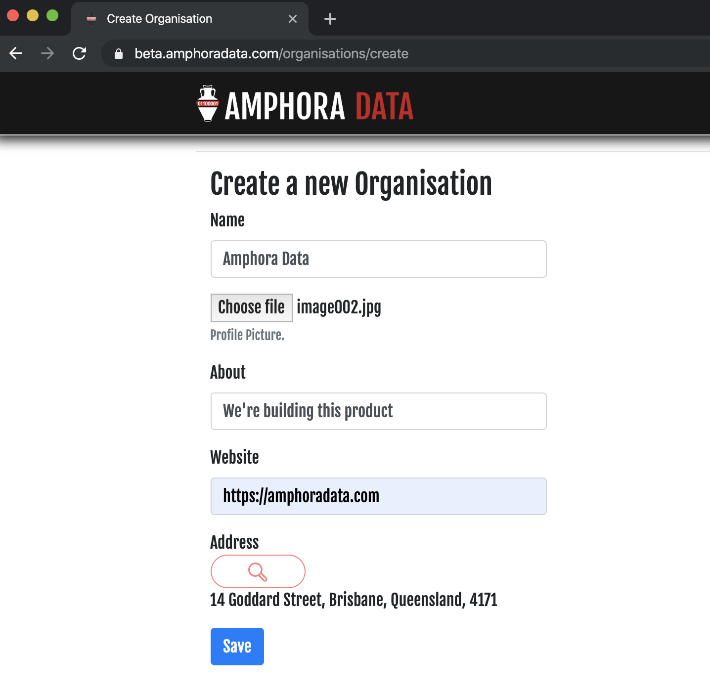
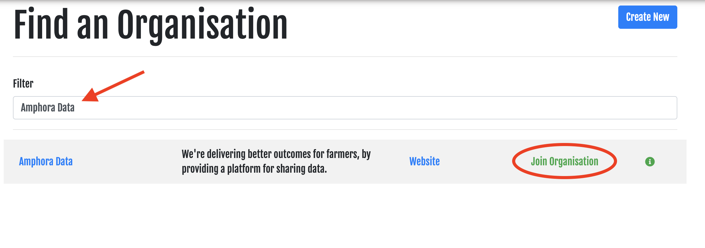
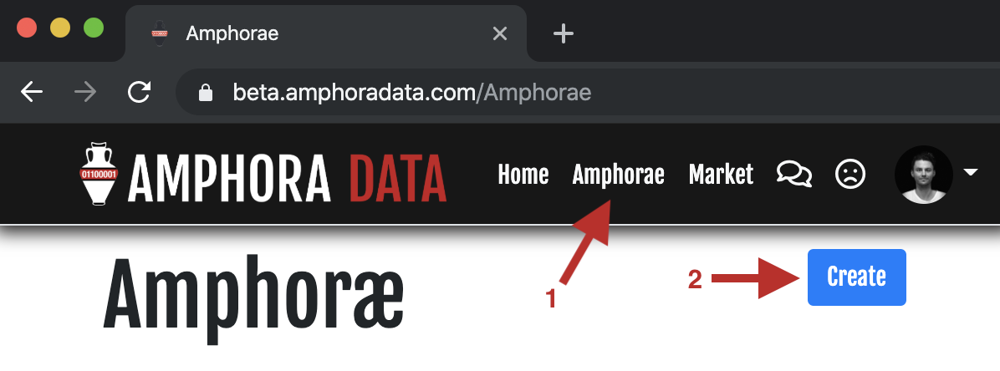
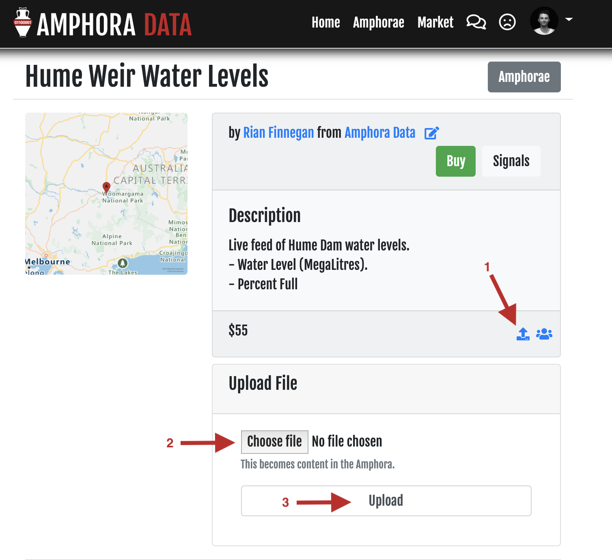
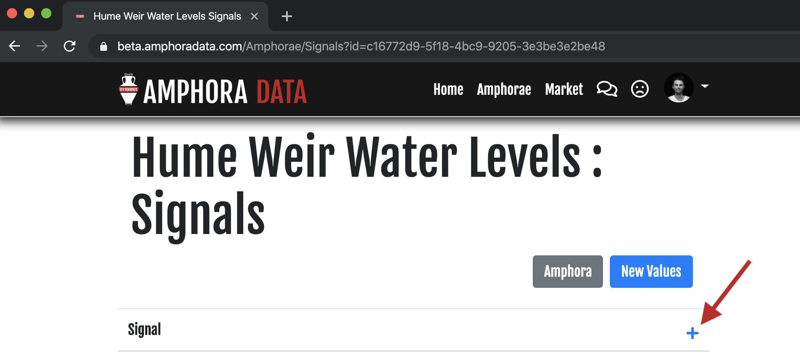
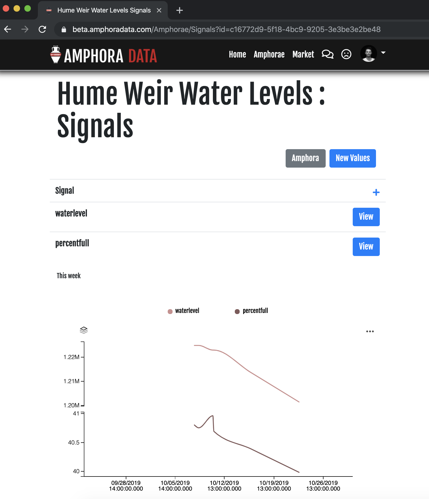
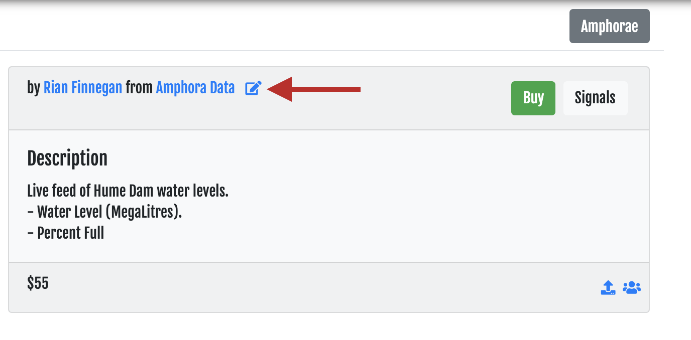

Getting Started with Amphora Data
Amphora Data is currently in beta. These documents may change.
Create an Amphora Data account.
Head to amphoradata.com and register with your organisational email address.
Create a new Organisation
If you're the first member of your organisation to sign up, then you'll need to create an Amphora Data Organisation.

Join an existing Organisation
If your organisation is already represented in Amphora Data, then you'll need to be invited into the Organisation. To join an organisation, once you've been invited, search for the name of the Organisation.

Create your first Amphora
Navigate to the Amphorae page, and click on the Create button.

At this stage, you can describe the Amphora, but not yet add any data. That comes later.
Give your Amphora a Name, Description, Price, and Geo-Location. You can search for locations, or just enter the Lat/Lon manually.
Add a file
The max file size is currently 10MB. If you need more, let us know.
You can add any kind of file to an Amphora - images, text files, csv, word documents etc. To upload a file from your computer, click the blue upload button, select a file, then click upload.

Add a signal
Signals are numeric data that change over time. Add a signal by clicking Signals in the top right of your Amphora detail's page, then click the + button to add a new property (i.e. the name of the signal), e.g. temperature.

Now you can submit a value for that signal (e.g. the current temperature) via the New Values button. Once submitted, you'll start seeting data on the graph.
It may take up to a minute for the new value to be processed and to show on the graph.

Delete the Amphora
If you're finished with an Amphora, and you (and nobody else) requires it's data, then it can be deleted.
To delete an Amphora, click on the edit button, then click delete.
